计算机网络基础
计算机网络基础
OSI七层模型
介绍：开放式系统互联，一般都叫OSI参考模型。
七层模型划分：物理层、数据链路层、网络层、传输层、会话层、表示层、应用层），每一层实现各自的功能和协议，并完成与相邻层的接口通信。
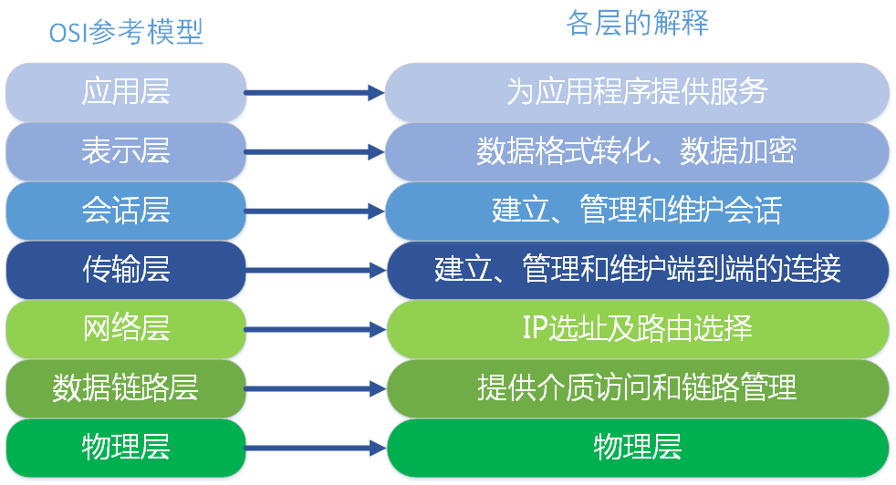
TCP/IP五层协议
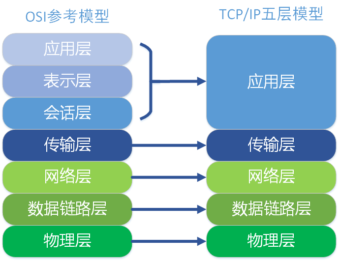
在每一层都工作者不同的设备，如：交换机就工作在数据链路层的，一般的路由器是工作在网络层的。如下图：
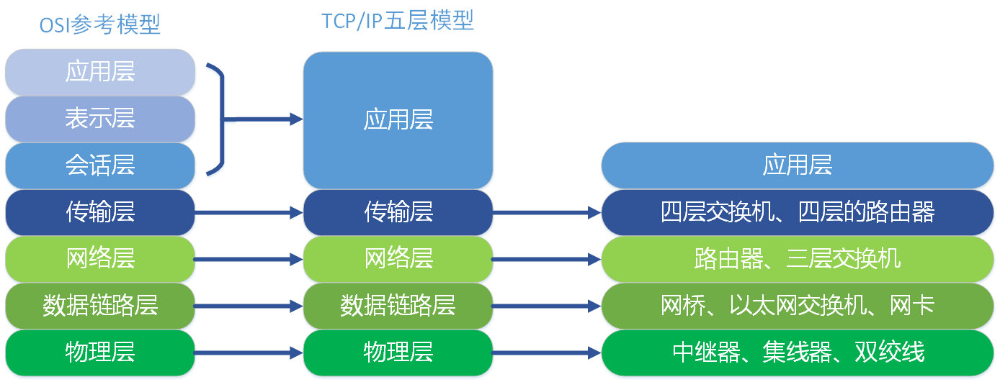
各层协议：

TCP/UDP协议的区别
- TCP面向连接（如打电话要先拨号建立连接）;UDP是无连接的，即发送数据之前不需要建立连接
- TCP提供可靠的服务。也就是说，通过TCP连接传送的数据，无差错，不丢失，不重复，且按序到达;UDP尽最大努力交付，即不保证可靠交付
- TCP实时性比UDP差，UDP更适用于对高速传输和实时性有较高的通信（比如LOL这种实时对战网络游戏）或广播通信。
- 每一条TCP连接只能是点到点的，即TCP不支持组播或者广播传输模式。UDP支持一对一，一对多，多对一和多对多的交互通信。
- TCP对系统资源要求较多，UDP对系统资源要求较少。
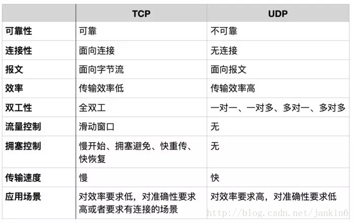
UDP在越来越多的场景下取代了TCP：
- UDP以其简单、传输快的优势，在越来越多场景下取代了TCP，不能容忍延迟比如LOL、Dota用UDP，可以容忍延迟的游戏如RPG还是用TCP。
- 网速的提升给UDP的稳定性提供可靠网络保障，丢包率很低，如果使用应用层重传，能够确保传输的可靠性。
- 网络游戏如果采用TCP，一旦发生丢包，TCP会将后续的包缓存起来，等前面的包重传并接收到后再继续发送，延时会越来越大，基于UDP对实时性要求较为严格的情况下，采用自定义重传机制，能够把丢包产生的延迟降到最低，尽量减少网络问题对游戏性造成影响。
设计UDP丢包检查来保证可靠性：
- 可以采用一个近似TCP的ack机制，可以给每个数据包都添加一个sequence ID，然后服务端就依次发送数据包，客户端收到数据包后就可以根据sequence ID来判断是否有丢包了。
- 接下来是重点，客户端需要发该sequenceID的ack给服务端，服务端才会知道这个包是否已经送达。但这是一笔不小的开销，而且，ack本身也有可能丢包。
- 可以这样，客户端发送一个sequence ID的ack时，附加一个32bit的位序列，表示当前sequence ID之前的32个连续顺位的数据包是否已经送达，其实就是冗余的发送连续32个包的送达状态，如果bit为0说明这个包还没到，如果为1，说明已经收到了。这样一来，除非连续丢包30多次，ack是一定会送到的，这种几率已经非常小了。
- 相应的，在服务端设置一个超时机制，这个时间差不多比连续发30个ack的时间长一点，如果发送一个包后开始计时，达到超时还没有收到ack，这个包就丢失了。
- 但即使丢包了也不一定需要重发！是否需要重发，如何重发可以和游戏的逻辑结合起来，没有必要实现类似TCP那样的完全可靠的机制，毕竟战斗中的同步速率很高，丢一个一般也没啥事情。
TCP如何保证可靠性
TCP通过校验和，重传控制，序号标识，滑动窗口、确认应答实现可靠传输。如丢包时的重发控制，还可以对次序乱掉的分包进行顺序控制
- 数据被分割成TCP认为最合适的数据块
- 包是按序收到的，即发送顺序和接受顺序一致。
- TCP发送一个段之后会启动一个定时器，等待目标端的确认信息，如果没有收到确认信息，会重发
- 防止序号回绕机制。即在连接期间，时间戳被用来辅助扩展32位序号，而且采用了伪随机的初始序号，防止重复数据包。
- TCP保证收到的包不出错，即保持首部和数据的校验和，如果收到的校验和出错，TCP将丢弃这个数据报也不会确认这个数据报
- TCP会对收到的数据进行重新排序，保证数据以正确的顺序交给应用层
- TCP还有流量控制和拥塞控制
- 滑动窗口协议也是来保证可靠的
TCP三次握手、四次挥手
TCP是面向连接的，在传输报文段之前先要建立连接。发起连接请求的一方叫客户端，想要连接请求的一方叫服务端。
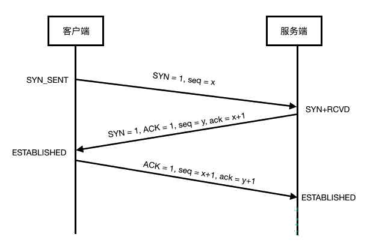
第一次握手： 客户端向服务端发送请求连接报文(SYN)；其中报头控制位SYN=1，初始序列号seq=x。并进入SYN_SENT(SYN-sent)状态，等待服务器确认；
第二次握手： 服务端收到请求连接报文(SYN)后，向客户端发送确认报文(SYN+ACK包)。确认报文段的首部中，ACK=1、SYN=1。确认序号：ack=x+1，同时为自己选择一个初始序列号seq=y。此时，服务器进入SYN_RCVD（SYN-received）状态；
第三次握手： 客户端收到服务器的确认报文(SYN＋ACK包)后，还要再向服务端发送一个确认报文(ACK)。该确认报文段首部中，ACK=1，确认号是ack=y+1，自己的序列号是seq=x+1。此包发送完毕，客户端进入ESTABLISHED(established)状态，服务端收到确认报文后，也进入ESTABLISHED(established)状态。
至此TCP连接建立。 三次握手过程中传送的包里不携带数据。三次握手完毕后，客户端与服务端才正式开始传输数据。理想状态下，TCP连接一旦建立，在通信双方中的任何一方主动关闭连接之前，TCP 连接都将被一直保持下去。
断开一个TCP连接需要“四次挥手”，此处，客户端为主动关闭方：
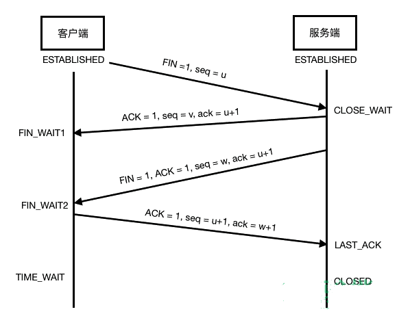
第一次挥手： 此时两端还都处于ESTABLISHED状态，客户端停止发送数据，并发送一个请求断开连接报文(FIN)。（此时客户端处于半连接状态）该报文首部中，FIN=1，序列号seq=u。 服务端接收到请求报文后，进入CLOSE_WAIT(关闭等待)状态。 也就是告诉服务端，我的数据发送完了，不会再给你发数据了。(另，在FIN包发送之前发送出去的数据，如果没有收到服务端对应的ACK确认报文，主动关闭方依然会重发这些数据)；此时，客户端还可以接受数据。
第二次挥手： 服务端收到请求断开连接报文(FIN)后，回复确认报文(ACK)，确认号：ack=u+1，序列号seq=v。 客户端收到确认报文(ACK)后，进入FIN-WAIT-1(终止等待-1)状态。 现在TCP连接处于半开半闭状态，服务端如果继续发送数据，客户端依然接收。
第三次挥手： 服务端发送一个请求断开连接报文(FIN)，用来服务端到客户端的数据传送。 该报文段首部中，FIN=1，ACK=1，确认序列号ack=u+1，序列号seq=w。 客户端接收到确认断开连接报文(ACK、FIN)后，进入FIN-WAIT-2(终止等待-2)状态。也就是告诉客户端，我的数据也发送完了，不会再给你发数据了。
第四次挥手： 客户端收到确认断开连接报文(ACK、FIN)后，回复确认报文(ACK)给服务端。 确认序号ack=w+1。序列号=u+1。 然后进入TIME_WAIT(时间等待)状态。
注意：此时，TCP连接还没有被释放，需要时间等待状态结束后(2MSL)，两端才会进入CLOSED状态。设置时间等待是因为——最后一个确认报文可能会丢失，而需要重传。
seq、ack、ACK、SYN、FIN
序列号seq：占4个字节，用来标记数据段的顺序，TCP把连接中发送的所有数据字节都编上一个序号，第一个字节的编号由本地随机产生；给字节编上序号后，就给每一个报文段指派一个序号；序列号seq就是这个报文段中的第一个字节的数据编号。
确认号ack：占4个字节，期待收到对方下一个报文段的第一个数据字节的序号；序列号表示报文段携带数据的第一个字节的编号；而确认号指的是期望接收到的下一个字节的编号；因此当前报文段最后一个字节的编号+1即为确认号。
确认ACK：占1位，仅当ACK=1时，确认号字段才有效。ACK=0时，确认号无效
同步SYN：连接建立时用于同步序号。当SYN=1，ACK=0时表示：这是一个连接请求报文段。若同意连接，则在响应报文段中使得SYN=1，ACK=1。因此，SYN=1表示这是一个连接请求，或连接接受报文。SYN这个标志位只有在TCP建立连接时才会被置1，握手完成后SYN标志位被置0。
终止FIN：用来释放一个连接。FIN=1表示：此报文段的发送方的数据已经发送完毕，并要求释放传输连接
ACK、SYN和FIN这些大写的单词表示标志位，其值要么是1，要么是0；ack、seq小写的单词表示序号。
TCP状态中TIME_WAIT作用
客户端接收到服务端的FIN报文后进入状态，此时并不是直接进入CLOSED状态，还需要等待一个时间计时器设置的时间，理由如下：
- 确保最后一个确认报文段能够到达，如果B没有收到A发送来的确认报文段，那么就会重新发送连接释放请求报文段，A等待一段时间就是为了处理这种情况发生。
- 可能存在’已失效的连接请求报文段，为了防止这种报文段出现在本次连接之外，需要等待一段时间。
服务器出现异常？
如果服务器出现异常，百分之八九十都是下面两种情况：
- 服务器保持了大量TIME_WAIT状态
- 服务器保持了大量CLOSE_WAIT状态
因为linux分配给一个用户的文件句柄是有限的，而TIME_WAIT和CLOSE_WAIT两种状态如果一直被保持，那么意味着对应数目的通道就一直被占着，而且是“占着茅坑不使劲”，一旦达到句柄数上限，新的请求就无法被处理了，接着就是大量Too Many Open Files异常，tomcat崩溃。。。
服务器大量CLOSE_WAIT状态的原因？？
- CLOSE_WAIT产生的原因在于：TCP Server 已经ACK了过来的FIN数据包，但是上层应用程序迟迟没有发命令关闭Server到client 端的连接。所以TCP一直在那等啊等…..
- 所以说如果发现自己的服务器保持了大量的CLOSE_WAIT，问题的根源十有八九是自己的server端程序代码的问题。
服务器大量TIME_WAIT状态原因？
- 服务器处理大量连接并主动关闭连接时，将导致服务器端存在大量的处于TIME_WAIT状态的socket。
- 因为主动关闭方会进入TIME_WAIT的状态，然后在保持这个状态2MSL（max segment lifetime）时间（1到4分钟）之后，彻底关闭回收资源（被占用的是一个五元组：（协议，本地IP，本地端口，远程IP，远程端口）。对于 Web 服务器，协议是 TCP，本地 IP 通常也只有一个，本地端口默认的 80 或者 443。只剩下远程 IP 和远程端口可以变了。如果远程 IP 是相同的话，就只有远程端口可以变了。这个只有几万个）。
- 所以如果大量关闭，资源还没来得及回收，会导致大量TIME_WAIT。
解决方案是修改linux内核，允许将TIME-WAIT sockets重新用于新的TCP连接，并开启TCP连接中TIME-WAIT sockets的快速回收，这些默认都是关闭的。
TCP连接为什么不是两次连接
防止失效的连接请求报文段被服务端接受，从而产生错误。
失效的连接请求：若客户端向服务端发送的连接请求丢失，客户端等待应答超时后就会再次发送连接请求，此时，上一个连接请求就是『失效的』。
若建立连接只需两次握手，客户端并没有太大的变化，仍然需要获得服务端的应答后才进入ESTABLISHED状态，而服务端在收到连接请求后就进入ESTABLISHED状态。此时如果网络拥塞，客户端发送的连接请求迟迟到不了服务端，客户端便超时重发请求，如果服务端正确接收并确认应答，双方便开始通信，通信结束后释放连接。此时，如果那个失效的连接请求抵达了服务端，由于只有两次握手，服务端收到请求就会进入ESTABLISHED状态，等待发送数据或主动发送数据。但此时的客户端早已进入CLOSED状态，服务端将会一直等待下去，这样浪费服务端连接资源。
TCP第三次握手失败会出现什么
当失败时，服务器并不会重传ack报文，而是直接发送RTS（注意区分RST）报文段，进入CLOSED状态，防止SYN洪泛攻击。
syn洪泛攻击，通俗的理解是：当第三次握手没有发送确认信息时，等待一段时间后，主机就会断开之前的半开连接并回收资源，这为dos（deny of service）攻击埋下隐患，当主动方主动发送大量的syn数据包，但并不做出第三次握手响应，server就会为这些syn包分配资源（但并未使用），就会使server占用大量内存，使server连接环境耗尽，这就是syn洪泛攻击
RST
RST标志位
RST表示复位，用来异常的关闭连接，在TCP的设计中它是不可或缺的。就像上面说的一样，发送RST包关闭连接时，不必等缓冲区的包都发出去（不像上面的FIN包），直接就丢弃缓存区的包发送RST包。而接收端收到RST包后，也不必发送ACK包来确认。
TCP处理程序会在自己认为的异常时刻发送RST包。例如，A向B发起连接，但B之上并未监听相应的端口，这时B操作系统上的TCP处理程序会发RST包。
又比如，AB正常建立连接了，正在通讯时，A向B发送了FIN包要求关连接，B发送ACK后，网断了，A通过若干原因放弃了这个连接（例如进程重启）。网通了后，B又开始发数据包，A收到后表示压力很大，不知道这野连接哪来的，就发了个RST包强制把连接关了，B收到后会出现connect reset by peer错误。
RST攻击
A和服务器B之间建立了TCP连接，此时C伪造了一个TCP包发给B，使B异常的断开了与A之间的TCP连接，就是RST攻击了。实际上从上面RST标志位的功能已经可以看出这种攻击如何达到效果了。
那么伪造什么样的TCP包可以达成目的呢？我们至顶向下的看。
假定C伪装成A发过去的包，这个包如果是RST包的话，毫无疑问，B将会丢弃与A的缓冲区上所有数据，强制关掉连接。
如果发过去的包是SYN包，那么，B会表示A已经发疯了（与OS的实现有关），正常连接时又来建新连接，B主动向A发个RST包，并在自己这端强制关掉连接。
这两种方式都能够达到复位攻击的效果。似乎挺恐怖，然而关键是，如何能伪造成A发给B的包呢？这里有两个关键因素，源端口和序列号。
一个TCP连接都是四元组，由源IP、源端口、目标IP、目标端口唯一确定一个连接。所以，如果C要伪造A发给B的包，要在上面提到的IP头和TCP头，把源IP、源端口、目标IP、目标端口都填对。这里B作为服务器，IP和端口是公开的，A是我们要下手的目标，IP当然知道，但A的源端口就不清楚了，因为这可能是A随机生成的。当然，如果能够对常见的OS如windows和linux找出生成source port规律的话，还是可以搞定的。
序列号问题是与滑动窗口对应的，伪造的TCP包里需要填序列号，如果序列号的值不在A之前向B发送时B的滑动窗口内，B是会主动丢弃的。所以我们要找到能落到当时的AB间滑动窗口的序列号。这个可以暴力解决，因为一个sequence长度是32位，取值范围0-4294967296，如果窗口大小像上图中我抓到的windows下的65535的话，只需要相除，就知道最多只需要发65537（4294967296/65535=65537）个包就能有一个序列号落到滑动窗口内。RST包是很小的，IP头＋TCP头也才40字节，算算我们的带宽就知道这实在只需要几秒钟就能搞定。
发送RST的情况：
在某些特殊情况下，TCP连接的一端会向另一端发送复位报文段，以通知对方关闭或重新建立连接。
- 访问不存在的端口。若端口不存，则直接返回RST，同时RST报文接收通告窗口大小为0。其实客户端向服务器的某个端口发起连接，如果端口被处于TIME_WAIT 状态的连接占用时，客户端也会收到RST。
- 异常终止连接。一方直接发送RST报文，表示异常终止连接。一旦发送方发送复位报文段，发送端所有排队等待发送的数据都被丢弃。应用程序可以通过socket选项SO_LINGER来发送RST复位报文。
3.处理半打开连接。一方关闭了连接，另一方却没有收到结束报文（如网络故障），此时另一方还维持着原来的连接。而一方即使重启，也没有该连接的任何信息。这种状态就叫做半打开连接。而此时另一方往处于半打开状态的连接写数据，则对方回应RST复位报文。
TCP长连接和短连接
在HTTP/1.0中默认使用短连接。也就是说，客户端和服务器每进行一次HTTP操作，就建立一次连接，任务结束就中断连接。当客户端浏览器访问的某个HTML或其他类型的Web页中包含有其他的Web资源（如JavaScript文件、图像文件、CSS文件等），每遇到这样一个Web资源，浏览器就会重新建立一个HTTP会话。
而从HTTP/1.1起，默认使用长连接，用以保持连接特性。使用长连接的HTTP协议，会在响应头加入这行代码：
1 | Connection:keep-alive |
在使用长连接的情况下，当一个网页打开完成后，客户端和服务器之间用于传输HTTP数据的TCP连接不会关闭，客户端再次访问这个服务器时，会继续使用这一条已经建立的连接。Keep-Alive不会永久保持连接，它有一个保持时间，可以在不同的服务器软件（如Apache）中设定这个时间。实现长连接需要客户端和服务端都支持长连接。
HTTP协议的长连接和短连接，实质上是TCP协议的长连接和短连接。
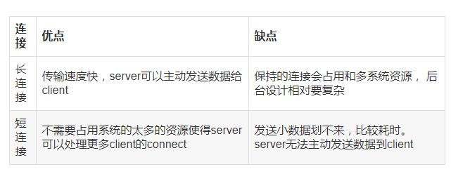
TCP流量控制
流量控制：一般来说，我们希望数据传输得更快一些，但如果发送方把数据发送的过快，接收方可能来不及接收，这就会造成数据的丢失。所谓流量控制就是让发送方的发送速率不要太快，要让接收方来得及接收。
有两种控制方式：
- 基于速率流量控制，它是给发送方指定某个速率，同时确保数据永远不能超过这个速率发送。这种类型的流量控制最适合流应用程序，可被用于广播和组播发现。
- 基于窗口流量控制，是使用滑动窗口时最流行的方法。在这种方法里，窗口大小不是固定的，而是允许随时间而变动的。为了使用这种技术，必须有种方法让接收方可以通知发送方使用多大的窗口。这一般称为窗口通告或者窗口更新。窗口更新和ACK是由同一个分组携带的，意味着发送方往往在它的窗口滑动到右边的同时调整它的大小。
在TCP的实现中广泛使用的Nagle算法:若发送方应用进程把要发送的数据逐个字节地送到TCP的发送缓存，则发送方就把第一个字节先发送出去，把后面到达的数据字节都缓存起来。当发送方收到对第一个数据字符的确认后，再把发送缓存中的所有数据组装成一个报文段发送出去，同时继续对随后到达的数据进行缓存。只有在收到对前一个报文段的确认后才继续发送下一个报文段。当数据到达较快而网络速率缓慢时，用这种方法可明显减少所用的网络带宽。Nagle算法还规定，当到达的数据已达到发送窗口大小的一半或者报文段的最大长度时，就立即发送一个报文段。这样做，可以有效提高网络的吞吐量。
TCP拥塞控制
发生拥塞控制的原因：资源(带宽、交换节点的缓存、处理机)的需求>可用资源。
拥塞控制就是为了防止过多的数据注入到网络中，这样可以使网络中的路由器或者链路不至于过载。拥塞控制要做的都有一个前提：就是网络能够承受现有的网络负荷。
包括：慢启动、拥塞避免、快重传、快启动。
对比流量控制：拥塞控制是一个全局的过程，涉及到所有的主机、路由器、以及降低网络相关的所有因素。流量控制往往指点对点通信量的控制。是端对端的问题。
拥塞窗口：发送方为一个动态变化的窗口叫做拥塞窗口，拥塞窗口的大小取决于网络的拥塞程度。发送方让自己的发送窗口=拥塞窗口，但是发送窗口不是一直等于拥塞窗口的，在网络情况好的时候，拥塞窗口不断的增加，发送方的窗口自然也随着增加，但是接受方的接受能力有限，在发送方的窗口达到某个大小时就不在发生变化了。发送方如果知道网络拥塞了呢？发送方发送一些报文段时，如果发送方没有在时间间隔内收到接收方的确认报文段，则就可以认为网络出现了拥塞。
慢启动：主机开发发送数据报时，如果立即将大量的数据注入到网络中，可能会出现网络的拥塞。慢启动算法就是在主机刚开始发送数据报的时候先探测一下网络的状况，如果网络状况良好，发送方每发送一次报文段都能正确的接受确认报文段。那么就从小到大的增加拥塞窗口的大小，即增加发送窗口的大小。例子：开始发送方先设置cwnd（拥塞窗口）=1,发送第一个报文段M1，接收方接收到M1后，发送方接收到接收方的确认后，把cwnd增加到2，接着发送方发送M2、M3，发送方接收到接收方发送的确认后cwnd增加到4，慢启动算法每经过一个传输轮次（认为发送方都成功接收接收方的确认），拥塞窗口cwnd就加倍。
拥塞控制：为了防止cwnd增加过快而导致网络拥塞，所以需要设置一个慢启动开始门限ssthresh状态变量（我也不知道这个到底是什么，就认为他是一个拥塞控制的标识）,它的用法：
- 当cwnd < ssthresh,使用慢启动算法，
- 当cwnd > ssthresh,使用拥塞控制算法，停用慢启动算法。
- 当cwnd = ssthresh，这两个算法都可以。
拥塞避免的思路：是让cwnd缓慢的增加而不是加倍的增长，每经历过一次往返时间就使cwnd增加1，而不是加倍，这样使cwnd缓慢的增长，比慢启动要慢的多。
无论是慢启动算法还是拥塞避免算法，只要判断网络出现拥塞，就要把慢启动开始门限(ssthresh)设置为设置为发送窗口的一半（>=2），cwnd(拥塞窗口)设置为1，然后在使用慢启动算法，这样做的目的能迅速的减少主机向网络中传输数据，使发生拥塞的路由器能够把队列中堆积的分组处理完毕。拥塞窗口是按照线性的规律增长，比慢启动算法拥塞窗口增长块的多。
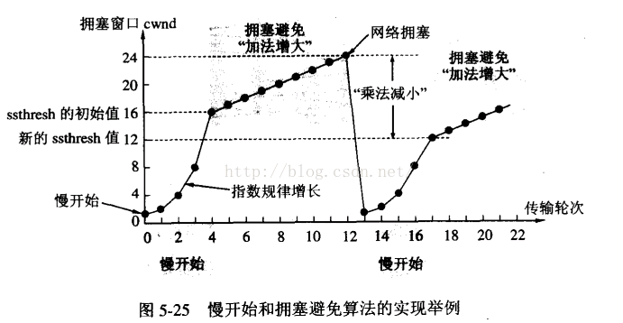
实例：
TCP连接进行初始化的时候，cwnd=1,ssthresh=16。
在慢启动算法开始时，cwnd的初始值是1，每次发送方收到一个ACK拥塞窗口就增加1，当ssthresh =cwnd时，就启动拥塞控制算法，拥塞窗口按照规律增长，
当cwnd=24时，网络出现超时，发送方收不到确认ACK，此时设置ssthresh=12,(二分之一cwnd),设置cwnd=1,然后开始慢启动算法，当cwnd=ssthresh=12,慢启动算法变为拥塞控制算法，cwnd按照线性的速度进行增长。
AIMD(加法增大乘法减小)
乘法减小：无论在慢启动阶段还是在拥塞控制阶段，只要网络出现超时，就是将cwnd置为1，ssthresh置为cwnd的一半，然后开始执行慢启动算法（cwnd<ssthresh）。
加法增大：当网络频发出现超时情况时，ssthresh就下降的很快，为了减少注入到网络中的分组数，而加法增大是指执行拥塞避免算法后，是拥塞窗口缓慢的增大，以防止网络过早出现拥塞。
这两个结合起来就是AIMD算法，是使用最广泛的算法。拥塞避免算法不能够完全的避免网络拥塞，通过控制拥塞窗口的大小只能使网络不易出现拥塞。
快重传：快重传算法要求首先接收方收到一个失序的报文段后就立刻发出重复确认，而不要等待自己发送数据时才进行捎带确认。接收方成功的接受了发送方发送来的M1、M2并且分别给发送了ACK，现在接收方没有收到M3，而接收到了M4，显然接收方不能确认M4，因为M4是失序的报文段。如果根据可靠性传输原理接收方什么都不做，但是按照快速重传算法，在收到M4、M5等报文段的时候，不断重复的向发送方发送M2的ACK,如果接收方一连收到三个重复的ACK,那么发送方不必等待重传计时器到期，由发送方尽早重传未被确认的报文段。
快恢复:
- 当发送发连续接收到三个确认时，就执行乘法减小算法，把慢启动开始门限（ssthresh）减半，但是接下来并不执行慢开始算法。
- 此时不执行慢启动算法，而是把cwnd设置为ssthresh的一半， 然后执行拥塞避免算法，使拥塞窗口缓慢增大。
TCP如何解决粘包、拆包问题
我们都知道TCP属于传输层的协议，传输层除了有TCP协议外还有UDP协议。那么UDP是否会发生粘包或拆包的现象呢？答案是不会。UDP是基于报文发送的，从UDP的帧结构可以看出，在UDP首部采用了16bit来指示UDP数据报文的长度，因此在应用层能很好的将不同的数据报文区分开，从而避免粘包和拆包的问题。而TCP是基于字节流的，虽然应用层和TCP传输层之间的数据交互是大小不等的数据块，但是TCP把这些数据块仅仅看成一连串无结构的字节流，没有边界；另外从TCP的帧结构也可以看出，在TCP的首部没有表示数据长度的字段，基于上面两点，在使用TCP传输数据时，才有粘包或者拆包现象发生的可能。
粘包、拆包表现形式
现在假设客户端向服务端连续发送了两个数据包，用packet1和packet2来表示，那么服务端收到的数据可以分为三种，现列举如下：
第一种情况，接收端正常收到两个数据包，即没有发生拆包和粘包的现象：

第二种情况，接收端只收到一个数据包，由于TCP是不会出现丢包的，所以这一个数据包中包含了发送端发送的两个数据包的信息，这种现象即为粘包。这种情况由于接收端不知道这两个数据包的界限，所以对于接收端来说很难处理

第三种情况，这种情况有两种表现形式，如下图。接收端收到了两个数据包，但是这两个数据包要么是不完整的，要么就是多出来一块，这种情况即发生了拆包和粘包。这两种情况如果不加特殊处理，对于接收端同样是不好处理的。
发生TCP粘包或拆包有很多原因，现列出常见的几点：
- 要发送的数据大于TCP发送缓冲区剩余空间大小，将会发生拆包。
- 待发送数据大于MSS（最大报文长度），TCP在传输前将进行拆包。
- 要发送的数据小于TCP发送缓冲区的大小，TCP将多次写入缓冲区的数据一次发送出去，将会发生粘包。
- 接收数据端的应用层没有及时读取接收缓冲区中的数据，将发生粘包。等等。
粘包、拆包解决办法：
通过以上分析，我们清楚了粘包或拆包发生的原因，那么如何解决这个问题呢？解决问题的关键在于如何给每个数据包添加边界信息，常用的方法有如下几个：
- 发送端给每个数据包添加包首部，首部中应该至少包含数据包的长度，这样接收端在接收到数据后，通过读取包首部的长度字段，便知道每一个数据包的实际长度了。
- 发送端将每个数据包封装为固定长度（不够的可以通过补0填充），这样接收端每次从接收缓冲区中读取固定长度的数据就自然而然的把每个数据包拆分开来。
- 可以在数据包之间设置边界，如添加特殊符号，这样，接收端通过这个边界就可以将不同的数据包拆分开。等等。。。
IP知识点总结
IP（Internet Protocol）即网络之间互连的协议。网络层的功能是基于IP地址进行不同网络系统间的路径选择。
IP作用：对不同数据链路的相异特性进行抽象化，在复杂的网络环境中将数据包发给最终的目标地址。
IP的两大功能
路由控制
- 含义：指分组数据发送到最终目标地址的功能。
- 作用：即使网络非常复杂，通过路由控制就可以确定到达目标地址的通路。
- 例子：坐火车，每到一站再向车站工作人员打听接下来该坐什么车。“各跳之间无计划传输”。
火车-数据链路，旅客-IP数据包，车站工作人员-路由器。 - 路由控制表：所有主机都维护着一张路由控制表（Routing Table），记录了IP数据在下一步应该发给哪个路由器。IP包根据这个路由表在各个数据链路上传输。
数据链路的抽象化
- IP对不同数据链路进行了抽象。那么不同数据链路之间最大的区别是：他们各自的最大传输单位（MTU，Maximum Transmission Unit）不同。IP会进行分片处理（IP Fragmentation），将较大的IP包分成多个较小的IP包。
- 从网络层上看，可以忽略数据包在各个数据链路上的MTU，只需要按照原地址发送的长度接收数据包。
IP属于面向无连接型
- 无连接型含义：发包之前，不需要建立与对端目标地址之间的连接。上次如果有需要发送给IP的数据，该数据会立即被压缩成IP包发出去。
- 缺点：产生冗余的通信。
- 为什么IP要采用面向无连接？
简化：面向连接相对复杂，管理每个连接本身就是一个很繁琐的事情。
提速：每次通信之前都要事先建立连接，会降低处理速度。需要有连接时，可以委托上一层提供此项服务。
IP地址的分类:
A类地址:定义：首位0开头，后24位是主机标识；网络地址范围：0.0.0.0~127.0.0.0；一个网段内可以容纳的主机上限是2^24-2个
B类地址：定义：前两位是10的地址，后16位是主机标识；网络地址范围：128.0.0.1~191.255.0.0；一个网段可以容纳的主机上限是2^16-2个
C类地址：定义：前三位是110的地址，前24位是网络标识，后8位是主机标识。网络地址范围：192.0.0.0~239.255.255.0；一个网段内可容纳的主机地址上限是2^8-2个(254个)
D类地址：定义：前四位是1110的地址，前32位是网络标识；网络地址范围：224.0.0.0~239.255.255.255；D类地址没有主机标识，常被用于多播
关于分配IP主机地址的注意事项：
- 主机地址不可以全部为0或全部为1。
- 全部为0标识对应的网络地址或IP地址不可获知。
- 全部为1的主机地址通常作为广播地址。
- 所以以上每个网段的主机数量上限是2^n-2个。
广播地址：
- 广播地址定义：IP地址的主机标识全部设置为1。
- 广播定义：向某个网段的广播地址发送IP包，这个网段的所有主机都能收到这个包，由主机IP之上的一层去判断是否接收数据。
- 缺点：给毫无关系的网络或主机带来影响，造成不必要的流量。
子网掩码
- 作用：理论上B类网络一个链路允许65000多台计算机连接。然而实际网络架构中，一般不会有在同一连路上连接65000多台计算机的情况。因此，直接使用A\B\C类地址，有点浪费资源，人们开始采用一种新的组合方式减少地址空间的浪费。子网掩码可以通过子网网络地址细分出比A\B\C类更小粒度的网络。
- 定义
子网掩码用二进制方式表示，也是32位二进制数字， - 规则
1表示IP地址的网络地址对应位。
0表示IP地址的主机地址对应位。 - 特点
子网掩码可以灵活指定网络标识的长度，从而网络粒度更细。
路由控制
- 作用：仅仅有IP地址不足以将数据发向目标地址，在数据发送过程中需要“指明路由器或主机”的信息，以便真正发往目标地址。保存这种信息的就是路由控制表（Routing Table）。该表是由一个“路由协议”（有别于IP协议）制作而成的。
- 路由控制与IP地址
默认路由
主机路由
环回地址
同一台计算机的程序之间进行网络通信，使用一个特殊IP地址 127.0.0.1作为环回地址，与该地址等价的是localhost主机名。使用这个IP或主机名，数据包不会发向网络。 - 路由控制表的聚合，又称路由汇总（Aggregation）。
作用：路由表越大，管理它需要的内存和CPU也就越大，而且查找路由表的时间就越长，导致转发IP数据包的性能下降。如果要构建大规模、高性能网络，需要尽可能削减路由表的大小。
利用网络地址的比特分步进行分层配置。对内即使有多个子网掩码，对外呈现出的也是同一个网络地址。 - IP对数据的处理
背景&作用
每种数据链路的MTU之所以不同，是因为每个不同类型的数据链路的使用目的不同，可承载的MTU也就不同。
IP数据传递到下一层数据链路层时，可能需要进行分片处理（IP Fragmentation)。
规则
按照路径中存在的所有数据链路中 最小的MTU发送，可以避免中途的路由器进行分片处理。
IPv6
- 定义：8个16位，共128比特，是IPv4长度的4倍。
- 作用：从根本上解决IPv4地址耗尽的问题。
- 特点：依旧适应互联网分层构造，路由控制上也尽可能避免路由表膨大，性能提升，简化首部，路由器不再分片，通过路径MTU只由发送端主机进行分片处理；即插即用；采用认证与加密功能；多播、Moblie IP比IPv4更顺利使用
- 规则
每16位比特为一组，用”:”隔开。出现连续的0时可以省略，用”::”表示。一个IP地址只允许出现一次“::”。
IP包的具体内容
IPv4首部
IP首部包含着 用IP协议进行发包控制时 所有的必要信息。首部以每32比特（8字节）为一个单位：
版本号：4比特，IPv4即值为4
首部长度（IHL：Internet Header Length）：IP首部大小。4比特，单位是4字节。值为5时，IP首部长度为4*5=20字节。
区分服务（TOS：Type Of Service）：表明服务质量。8比特，现已划分为DSCP和ECN两个字段。
总长度（Total Length）：表示IP首部与数据部分的总字节数。该字段长16比特。因此IP包最大长度是65535字节。
标识（ID：Identification）:用于分片重组，该字段长16比特。同一分片的标识值相同，不同分片的标识值不同。
标志（Flags）:表示包被分片的相关信息，该字段长3比特。可以表示 是否使用分片、是否分片的最后一个包。
片偏移（FO：Fragment Offset）:标识被分片的每一个分段相对于原始数据的位置。该字段长13比特。单位是8字节，因此最大可以表示8* 2^13 =65536字节的位置。
生存时间（TTL：Time To Live）：指可以中转多少个路由器，没经过一个路由器，TTL会减1，该字段长度为8比特。因此一个包的中转路由次数不会超过2^8=256次。由此可以避免IP包在网络内无限传递的问题。
协议（Protocol）：表示IP首部的下一个首部属于哪个协议（其实就是上层协议）。该字段长度8比特。
首部校验和（Header Checksum）：按照一定算法校验数据报的首部，不校验数据部分，主要来确保IP数据报不被破坏。该字段长度16比特。
源地址（Source Address）：32比特，表示发送端IP地址。
目标地址（Destination Address）：32比特，表示接收端IP地址。
可选项（Options）:
长度可变，通常只用于实验或诊断时使用。包含如下几点信息：
安全级别
源路径
路径记录
时间戳
填充（Padding）：再有可选项的情况下，首部长度可能不是32比特的整数倍。为此，通过向该字段填充0，调整为32比特的整数倍。
IP包数据部分
OSI模型网络层之下 数据链路层的数据帧 就是IP包的数据部分。IP首部是对数据进行包装，增加了网络层的控制信息。*
ICMP协议
架构IP网络时需要注意：确认网络是否正常工作，以及遇到异常时进行问题诊断
作用
- 确定IP包是否成功送达目标地址
- 通知发在发送过程中IP包被废弃的原因
- 改善网络设置
根据以上，就可以获得网路是否正常、设置是否有误以及设备有何异常等信息，从而便于进行网络上的问题诊断。
网络的设置可以包括很多内容：网线、IP地址和子网掩码的设置、路由表的和值、DNS服务器的设置、邮件服务器的设置以及代理服务器的设置等。而ICMP只负责与IP相关的设置。
ICMP的包以明文的形式像TCP、UDP一样通过IP进行传输。然而，ICMP所承担的功能并非传输层的补充，而应该把它视为IP的一部分。
ICMP的消息分为两类：通知出错原因的错误消息;用于诊断的查询消息
ICMP超时消息
IP包首部有一个字段TTL，每经过一个路由器就会减1，直到减到0时IP报就会被丢弃。此时，IP路由器将会发送一个ICMP超时的消息给发送端，通知该包已被丢弃。
ICMP回送消息
用于进行通信的主机或路由器之间，判断所发送的数据包是否已经成功到达对端的一种消息。
向对端主机发送 回送请求消息（ICMP Echo Request Message）,接收对端主机发回来的 回送应答消息（ICMP Echo Reply Message）。
ping命令（Packet InterNetwork Groper） 就是利用这个消息实现的。
还有ICMP路由器探索消息用于发现与自己相连网络中的路由器、ICMP地址掩码消息获取子网掩码的信息。
ARP解析过程
ARP是一种能够实现IP地址到物理地址的转化协议，以目标地址为线索用来定义下一位应该接收数据分包的网络设备对应的MAC地址，如果目标主机不在同一个数据链路层的话，可以通过ARP查找下一跳路由器的MAC地址，ARP只识用于IPV4，IPV6可以使用ICMPV6替代。
ARP工作过程：ARP借助ARP请求包和响应包来确定MAC地址。
例如：处在同一链路上的主机A 向B发送一个IP请求包，且互不知MAC地址：主机为了获取主机B的 MAC地址，起初通过广播发送一个ARP请求包，此包包含想要获取MAC地址主机的IP地址，因此ARP的请求包中会被同一链路上的所有主机或路由解析，如果ARP请求包中的目标IP与自己的IP地址相同，那么此节点就将自己MAC地址塞入ARP响应包，返回给主机A。
ARP缓存表：如果每发送一次IP数据包就进行一次ARP请求获取MAC地址，会造成不必要的网络流量。通常做法就是把获取的MAC地址缓存一端时间，即把第一次通过ARP获取的MAC地址作为IP对MAC的映射关系记忆，下一次如果若向该IP发送数据的时候，直接使用缓存表中的多应的MAC地址进行通信即可。当然每执行一次ARP请求去，其对应的ARP都会被清除。
DNS原理
网络通讯大部分是基于TCP/IP的，而TCP/IP是基于IP地址的，所以计算机在网络上进行通讯时只能识别如“202.96.134.133”之类的IP地址，而不能认识域名。我们无法记住10个以上IP地址的网站，所以我们访问网站时，更多的是在浏览器地址栏中输入域名，就能看到所需要的页面，这是因为有一个叫“DNS服务器”的计算机自动把我们的域名“翻译”成了相应的IP地址，然后调出IP地址所对应的网页。
DNS( Domain Name System)是“域名系统”的英文缩写，是一种组织成域层次结构的计算机和网络服务命名系统，它用于TCP/IP网络，它所提供的服务是用来将主机名和域名转换为IP地址的工作
DNS 的过程
- 首先是查找浏览器缓存，浏览器会保存一段时间你之前访问过的一些网址的DNS信息，不同浏览器保存的时常不等。
- 如果没有找到对应的记录，这个时候浏览器会尝试调用系统缓存来继续查找这个网址的对应DNS信息。
- 如果还是没找到对应的IP，那么接着会发送一个请求到路由器上，然后路由器在自己的路由器缓存上查找记录，路由器一般也存有DNS信息。
- 如果还是没有，这个请求就会被发送到ISP（注：Internet Service Provider，互联网服务提供商，就是那些拉网线到你家里的运营商，中国电信中国移动什么的），ISP也会有相应的ISP DNS服务器，一听中国电信就知道这个DNS服务器的规模肯定不会小，所以基本上都能在这里找得到。题外话：会跑到这里进行查询是因为你没有改动过”网络中心”的”ipv4”的DNS地址，万恶的电信联通可以改动了这个DNS服务器，换句话说他们可以让你的浏览器跳转到他们设定的页面上，这也就是人尽皆知的DNS和HTTP劫持，ISP们还美名曰“免费推送服务”。强烈鄙视这种霸王行为。我们也可以自行修改DNS服务器来防止DNS被ISP污染。
- 如果还是没有的话， 你的ISP的DNS服务器会将请求发向根域名服务器进行搜索。根域名服务器就是面向全球的顶级DNS服务器，共有13台逻辑上的服务器，从A到M命名，真正的实体服务器则有几百台，分布于全球各大洲。所以这些服务器有真正完整的DNS数据库。如果到了这里还是找不到域名的对应信息，那只能说明一个问题：这个域名本来就不存在，它没有在网上正式注册过。或者卖域名的把它回收掉了（通常是因为欠费）。 这也就是为什么打开一个新页面会有点慢，因为本地没什么缓存，要这样递归地查询下去
DHCP动态主机配置协议
即自动给主机配置IP地址、网络掩码等信息。
DHCP如何实现分配IP？
- 首先每个网络必须有一个DHCP服务器
- 计算机启动时，在自己的网络上广播一个报文，请求IP地址
- 这个请求就是DHCP DISCOVER包，这个包必须到达DHCP服务器
- DHCP收到请求了就给主机分配一个IP地址，并通过DHCP OFFER包返回给主机
- 为了在主机没有IP地址的情况下完成此项工作，服务器用主机的以太网地址来标识这台主机
防止IP地址过期
为了避免主机离开网络，并没有把IP地址返回给DHCP服务器，因此DHCP服务器在分配IP地址的时候都会指定一个有效期。在有效期满之前，主机必须请求续订。
DHCP数据包格式及其原理
DHCP可为主机配置除了IP地址以外的其他各种参数，比如网络掩码、默认网关的IP地址，DNS服务器和时间服务器的IP地址。
HTTP简介
HTTP协议是Hyper Text Transfer Protocol（超文本传输协议）的缩写，是用于从万维网（WWW：World Wide Web）服务器传输超文本到本地浏览器的传送协议。HTTP基于TCP/IP通信协议来传递数据（HTML 文件, 图片文件, 查询结果等）。工作于客户端-服务端架构上。浏览器作为HTTP客户端通过URL向HTTP服务端即WEB服务器发送所有请求。Web服务器根据接收到的请求，向客户端发送响应信息。（明文传输）
HTTP之请求消息Request：请求行、请求头部（header）、空行和请求数据四部分组成。
HTTP响应消息Response：HTTP响应由四个部分组成：状态行、消息报头、空行和响应正文
HTTPS和HTTP区别
- http是HTTP协议运行在TCP之上。所有传输的内容都是明文，客户端和服务器端都无法验证对方的身份。
- https是HTTP运行在SSL/TLS之上，SSL/TLS运行在TCP之上。所有传输的内容都经过加密，加密采用对称加密，但对称加密的密钥用服务器方的证书进行了非对称加密。此外客户端可以验证服务器端的身份，如果配置了客户端验证，服务器方也可以验证客户端的身份。
- https协议需要到ca申请证书，一般免费证书很少，需要交费。
- http是超文本传输协议，信息是明文传输，https 则是具有安全性的ssl加密传输协议
- http和https使用的是完全不同的连接方式用的端口也不一样,前者是80,后者是443。
- http的连接很简单,是无状态的
- HTTPS协议是由SSL+HTTP协议构建的可进行加密传输、身份认证的网络协议 要比http协议安全
HTTPS不足之处：
- HTTPS协议握手阶段比较费时，会使页面的加载时间延长近50%，增加10%到20%的耗电；
- HTTPS连接缓存不如HTTP高效，会增加数据开销和功耗，甚至已有的安全措施也会因此而受到影响；
- SSL证书需要钱，功能越强大的证书费用越高，个人网站、小网站没有必要一般不会用。
- SSL证书通常需要绑定IP，不能在同一IP上绑定多个域名，IPv4资源不可能支撑这个消耗。
- HTTPS协议的加密范围也比较有限，在黑客攻击、拒绝服务攻击、服务器劫持等方面几乎起不到什么作用。最关键的，SSL证书的信用链体系并不安全，特别是在某些国家可以控制CA根证书的情况下，中间人攻击一样可行。
HTTPS建立连接过程
建立HTTPS连接前需要建立SSL加密
过程：
- 客户端发送请求到服务器端
- 服务器端返回证书和公开密钥，公开密钥作为证书的一部分而存在
- 客户端验证证书和公开密钥的有效性，如果有效，则生成共享密钥并使用公开密钥加密发送到服务器端
- 服务器端使用私有密钥解密数据，并使用收到的共享密钥加密数据，发送到客户端
- 客户端使用共享密钥解密数据
一次完整HTTP请求
- 网址进行DNS域名解析，得到对应的IP地址
- 根据这个IP，找到对应的服务器，发起TCP的三次握手
- 建立TCP连接后发起HTTP请求
- 服务器响应HTTP请求，浏览器得到html代码
- 浏览器解析html代码，并请求html代码中的资源（如js、css图片等）（先得到html代码，才能去找这些资源）
- 浏览器对页面进行渲染呈现给用户
注：
- DNS域名解析采用的是递归查询的方式，过程是，先去找DNS缓存->缓存找不到就去找根域名服务器->根域名又会去找下一级，这样递归查找之后，找到了，给我们的web浏览器。
- 为什么HTTP协议要基于TCP来实现？ TCP是一个端到端的可靠的面相连接的协议，HTTP基于传输层TCP协议不用担心数据传输的各种问题（当发生错误时，会重传）
- 最后一步浏览器是如何对页面进行渲染的？ a）解析html文件构成 DOM树，b）解析CSS文件构成渲染树， c）边解析，边渲染 ， d）JS 单线程运行，JS有可能修改DOM结构，意味着JS执行完成前，后续所有资源的下载是没有必要的，所以JS是单线程，会阻塞后续资源下载
HTTP1.0 HTTP1.1 HTTP2.0
HTTP1.0、HTTP 1.1主要区别
长链接：HTTP 1.0需要使用keep-alive参数来告知服务器端要建立一个长连接，而HTTP1.1默认支持长连接。HTTP是基于TCP/IP协议的，创建一个TCP连接是需要经过三次握手的,有一定的开销，如果每次通讯都要重新建立连接的话，对性能有影响。因此最好能维持一个长连接，可以用个长连接来发多个请求。
节约带宽：HTTP 1.1支持只发送header信息(不带任何body信息)，如果服务器认为客户端有权限请求服务器，则返回100，否则返回401。客户端如果接受到100，才开始把请求body发送到服务器。这样当服务器返回401的时候，客户端就可以不用发送请求body了，节约了带宽。另外HTTP还支持传送内容的一部分。这样当客户端已经有一部分的资源后，只需要跟服务器请求另外的部分资源即可。这是支持文件断点续传的基础
HOST域：现在可以web server例如tomat，设置虚拟站点是非常常见的，也即是说，web serve上的多个虚拟站点可以共享同一个ip和端口。HTTP1.0是没有host域的，HTTP1.1才支持这个参数。
HTTP 1.1、HTTP2.0主要区别
多路复用：HTTP2.0使用了多路复用的技术，做到同一个连接并发处理多个请求，而且并发请求的数量比HTTP1.1大了好几个数量级。当然HTTP1.1也可以多建立几个TCP连接，来支持处理更多并发的请求，但是创建TCP连接本身也是有开销的。TCP连接有一个预热和保护的过程，先检查数据是否传送成功，一旦成功过，则慢慢加大传输速度。因此对应瞬时并发的连接，服务器的响应就会变慢。所以最好能使用一个建立好的连接，并且这个连接可以支持瞬时并发的请求。
数据压缩：HTTP1.1不支持header数据的压缩，HTTP2.0使用HPACK算法对header的数据进行压缩，这样数据体积小了，在网络上传输就会更快。
服务器推送：当我们对支持HTTP2.0的web server请求数据的时候，服务器会顺便把一些客户端需要的资源一起推送到客户端，免得客户端再次创建连接发送请求到服务器端获取。这种方式非常合适加载静态资源。服务器端推送的这些资源其实存在客户端的某处地方，客户端直接从本地加载这些资源就可以了，不用走网络，速度自然是快很多的。
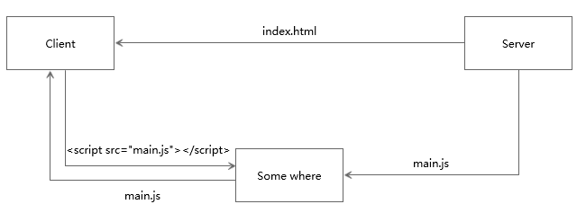
服务端推送过来的资源，会统一放在一个网络与http缓存之间的一个地方，在这里可以理解为“本地”。当客户端把index.html解析完以后，会向本地请求这个资源。由于资源已经本地化，所以这个请求的速度非常快，这也是服务端推送性能优势的体现之一
session和cookie
会话（Session）跟踪是Web程序中常用的技术，用来跟踪用户的整个会话。常用的会话跟踪技术是Cookie与Session。Cookie通过在客户端记录信息确定用户身份，Session通过在服务器端记录信息确定用户身份。
理论上，一个用户的所有请求操作都应该属于同一个会话，而另一个用户的所有请求操作则应该属于另一个会话，二者不能混淆
HTTP协议是无状态的协议。一旦数据交换完毕，客户端与服务器端的连接就会关闭，再次交换数据需要建立新的连接。这就意味着服务器无法从连接上跟踪会话。即用户A购买了一件商品放入购物车内，当再次购买商品时服务器已经无法判断该购买行为是属于用户A的会话还是用户B的会话了。要跟踪该会话，必须引入一种机制。
Cookie ：由于HTTP是一种无状态的协议，服务器单从网络连接上无从知道客户身份。怎么办呢？就给客户端们颁发一个通行证吧，每人一个，无论谁访问都必须携带自己通行证。这样服务器就能从通行证上确认客户身份了。这就是Cookie的工作原理。
Cookie实际上是一小段的文本信息。客户端请求服务器，如果服务器需要记录该用户状态，就使用response向客 户端浏览器颁发一个Cookie。客户端浏览器会把Cookie保存起来。当浏览器再请求该网站时，浏览器把请求的网址连同该Cookie一同提交给服务器。服务器检查该Cookie，以此来辨认用户状态。服务器还可以根据需要修改Cookie的内容。
Session：Session是另一种记录客户状态的机制，不同的是Cookie保存在客户端浏览器中，而Session保存在服务器上。客户端浏览器访问服务器的时候，服务器把客户端信息以某种形式记录在服务器上。这就是Session。客户端浏览器再次访问时只需要从该Session中查找该客户的状态就可以了。
如果说Cookie机制是通过检查客户身上的“通行证”来确定客户身份的话，那么Session机制就是通过检查服务器上的“客户明细表”来确认客户身份。Session相当于程序在服务器上建立的一份客户档案，客户来访的时候只需要查询客户档案表就可以了。
区别：
- 存放的位置：cookie保存在客户端，session一般保存在服务器端的文件系统或数据库或mamcache
- 安全性：由于session存放在服务器端，而客户端可以集中采用软、硬件技术保证安全性，所以cookie的安全性较session弱；
- 网络传输量：cookie需通过网络实现客户端与服务器端之间的传输，而session保存在服务器端，无需传输；
- 生存时间（以设置24分钟为例）
（1）cookie的生命周期是累计的。从创建的时候就开始计时，24分钟后cookie生命周期结束，cookie自动失效；
（2）session的生命周期是间隔的，从创建时开始计时，比如在24分钟内（php.ini默认session的失效时间就是1440s，即24m）没有访问过session(指没有执行含session的文件)，那么session信息就自动无效，但如果在24分钟之内，比如第23分钟访问过session，那么它的生命周期将重新开始计算。
GET和POST
在客户机和服务器之间进行请求-响应时，两种最常被用到的方法是：GET 和 POST。GET - 从指定的资源请求数据。POST - 向指定的资源提交要被处理的数据
GET交互
- GET交互方式是从服务器上获取数据，而并非修改数据，所以GET交互方式是安全的。就像数据库查询一样，从数据库查询数据，并不会影响数据库的数据信息，对数据库来说，也就是安全的。
- GET交互方式是幂等的，幂等是一个数学概念，幂等函数就是可以使用相同参数重复执行，并且能获得相同结果的函数。在GET交互这里就是，对同一个URL的多个请求，得到的结果是相同的。就像数据库查询，不同的数据库连接对同一个数据库表用相同条件查询时，得到的结果也是一样的。
POST交互
- POST交互是可以修改服务器数据的一种方式，涉及到信息的修改，就会有安全问题。就像数据库的更新，Update一个数据库表时，如果条件没有写对，就可能把不需要修改的数据给修改了，得到的数据就是错误的了。
- 一般的POST交互是必须要用到表单的，但是表单提交的默认方法是GET，如果改为POST方式，就需要修改表单提交时的Method。
区别：
- get参数通过url传递，post放在request body中。
- get请求在url中传递的参数是有长度限制的，而post没有。
- get比post更不安全，因为参数直接暴露在url中，所以不能用来传递敏感信息。
- 1：get请求只能进行url编码，而post支持多种编码方式；2：get请求会浏览器主动cache，而post支持多种编码方式。3：get请求参数会被完整保留在浏览历史记录里，而post中的参数不会被保留。
- GET和POST本质上就是TCP链接，并无差别。但是由于HTTP的规定和浏览器/服务器的限制，导致他们在应用过程中体现出一些不同。
- GET产生一个TCP数据包；POST产生两个TCP数据包。
- 对于GET方式的请求，浏览器会把http header和data一并发送出去，服务器响应200（返回数据）；而对于POST，浏览器先发送header，服务器响应100 continue，浏览器再发送data，服务器响应200 ok（返回数据）。
状态码
- 2开头 （请求成功）表示成功处理了请求的状态代码。
- 3开头 （请求被重定向）表示要完成请求，需要进一步操作。 通常，这些状态代码用来重定向。
- 4开头 （请求错误）这些状态代码表示请求可能出错，妨碍了服务器的处理。
- 5开头（服务器错误）这些状态代码表示服务器在尝试处理请求时发生内部错误。 这些错误可能是服务器本身的错误，而不是请求出错。
2XX
- 200 OK
- 204 No Content：请求已经成功处理，但是返回的响应报文不包含实体的主体部分。一般在只需要从客户端往服务器发送信息，而不需要返回数据时使用。
- 206 Partial Content ：表示客户端进行了范围请求。响应报文包含由 Content-Range 指定范围的实体内容。
3XX
- 301：表示永久重定向（301 moved permanently），表示请求的资源分配了新url，以后应使用新url。
- 302：表示临时性重定向（302 found），请求的资源临时分配了新url，本次请求暂且使用新url。302与301的区别是，302表示临时性重定向，重定向的url还有可能还会改变。
- 303：表示请求的资源路径发生改变，使用GET方法请求新url。她与302的功能一样，但是明确指出使用GET方法请求新url。
新url指的是，第一次请求返回的location。 - 304 not modified：客户端发送附带条件的请求时（if-matched,if-modified-since,if-none-match,if-range,if-unmodified-since任一个）服务器端允许请求访问资源，但因发生请求未满足条件的情况后，直接返回304Modified（服务器端资源未改变，可直接使用客户端未过期的缓存）。304状态码返回时，不包含任何响应的主体部分。304虽然被划分在3xx类别中，但是和重定向没有关系。
4XX
- 400 Bad Request：请求报文中存在语法错误。
- 401 Unauthorized：该状态码表示发送的请求需要有认证信息（BASIC 认证、DIGEST 认证）。如果之前已进行过一次请求，则表示用户认证失败。
- 403 Forbidden ：请求被拒绝，服务器端没有必要给出拒绝的详细理由。
- 404 Not Found
5XX
- 500 Internal Server Error：服务器正在执行请求时发生错误。
- 503 Service Unavailable ：服务器暂时处于超负载或正在进行停机维护，现在无法处理请求。
HTTP方法
客户端发送的 请求报文 第一行为请求行，包含了方法字段。
GET
获取资源，当前网络请求中，绝大部分使用的是 GET 方法。
HEAD
获取报文首部，和 GET 方法一样，但是不返回报文实体主体部分。主要用于确认 URL 的有效性以及资源更新的日期时间等。
POST
传输实体主体，POST 主要用来传输数据，而 GET 主要用来获取资源。
PUT
上传文件，由于自身不带验证机制，任何人都可以上传文件，因此存在安全性问题，一般不使用该方法。
1 | PUT /new.html HTTP/1.1 |
PATCH
对资源进行部分修改，PUT 也可以用于修改资源，但是只能完全替代原始资源，PATCH 允许部分修改。
1 | PATCH /file.txt HTTP/1.1 |
DELETE
删除文件，与 PUT 功能相反，并且同样不带验证机制。
1 | DELETE /file.html HTTP/1.1 |
OPTIONS
查询支持的方法，、查询指定的 URL 能够支持的方法。会返回 Allow: GET, POST, HEAD, OPTIONS 这样的内容。
CONNECT
要求在与代理服务器通信时建立隧道，使用 SSL（Secure Sockets Layer，安全套接层）和 TLS（Transport Layer Security，传输层安全）协议把通信内容加密后经网络隧道传输。
HTTP请求格式
主要有四部分组成，分别是：请求行、请求头、空行、消息体，每部分内容占一行
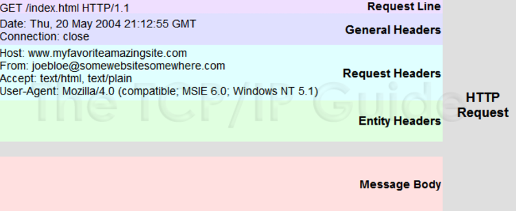
- 请求行：由三部分组成，GET/POST请求方法、请求资源URL、HTTP版本号
- 请求头：和缓存相关的头（Cache-Control，If-Modified-Since），客户端身份信息（User-Agent）等等
- 消息体：客户端发给服务端的请求数据，这部分数据并不是每个请求必须的
HTTP响应格式
包括：状态行、响应头、空行、消息体。每部分内容占一行
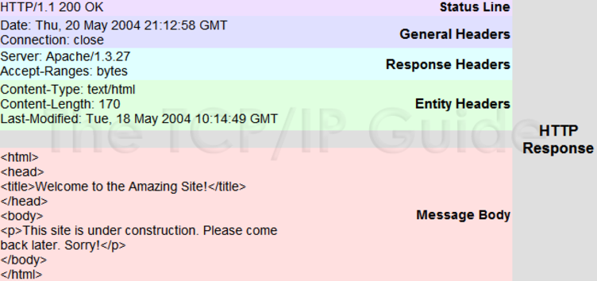
- 状态行：HTTP协议版本号，状态码和状态说明三部分构成
- 响应头：响应头是服务器传递给客户端用于说明服务器的一些信息（Content-Type，charset等），以及将来继续访问该资源时的策略。
- 响应体：返回给客户端的HTML文本内容，或者其他格式的数据，比如：视频流、图片或者音频数据。
TCP\UDP常用端口
端口号的范围是从1～65535。其中1～1024是被RFC 3232规定好了的，被称作“众所周知的端口”(Well Known Ports)；从1025～65535的端口被称为动态端口（Dynamic Ports），可用来建立与其它主机的会话，也可由用户自定义用途。
TCP 21端口：FTP 文件传输服务
TCP 23端口：TELNET 终端仿真服务，远程登录
TCP 25端口：SMTP 简单邮件传输服务，发送邮件
UDP 53端口：DNS 域名解析服务
TCP 80端口：HTTP 超文本传输服务
TCP 110端口：POP3 “邮局协议版本3”使用的端口，接收邮件
TCP 443端口：HTTPS 加密的超文本传输服务
参考
https://github.com/ZXZxin/ZXBlog
https://www.zhihu.com/question/24853633
https://blog.csdn.net/jankin6/article/details/79192095
https://www.jianshu.com/p/1183208dd5e3
https://www.cnblogs.com/zhangyinhua/p/7611420.html
https://baijiahao.baidu.com/s?id=1593714120815701015&wfr=spider&for=pc
https://coding.imooc.com/lesson/132.html#mid=8907
https://blog.csdn.net/wenqian1991/article/details/40110703
https://www.cnblogs.com/huenchao/p/6266352.html


原文作者: Yang Peng
原文链接: http://ylovex.cn/2019/06/25/计算机网络基础/
版权声明: 转载请注明出处(必须保留作者署名及链接)